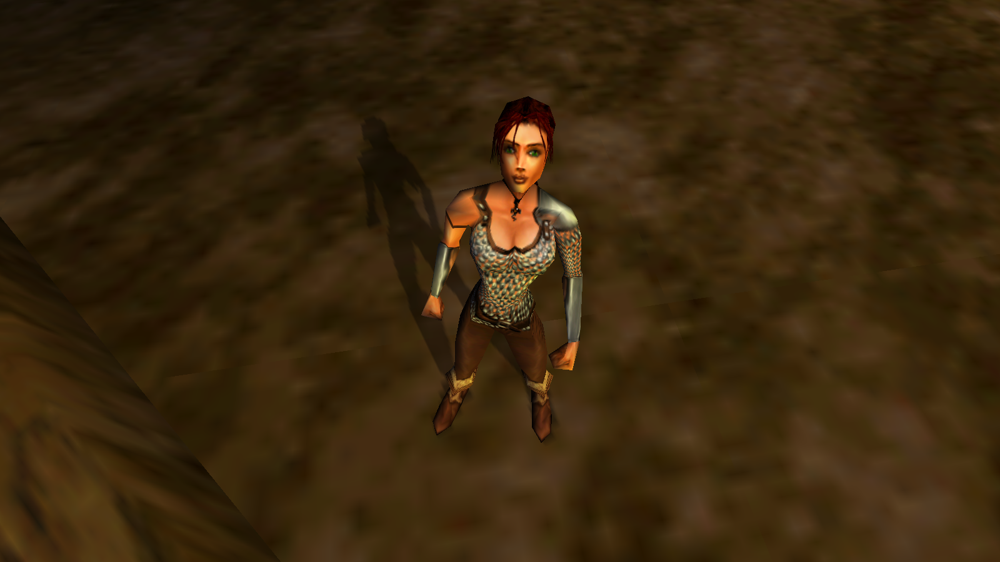
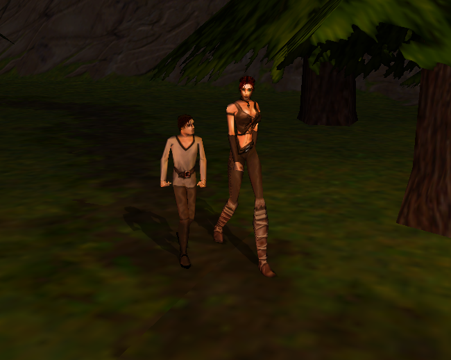

 
Rynn is a young woman in her early twenties who grew up in a small remote village situated in the foothills of the mountains on the great central continent of Drakan. Like almost all small human settlements, life was hard work; a constant struggle to survive from one winter to the next and the threat from neighbouring Wartocks was ever present. Many families were very poor and mainly relied on income from selling weapons and other wares to the various traders that sometimes passed by. Journeys to the nearest town in the district were few and far between. After the death of her parents in a Wartock raid, she was left alone to look after her younger brother Delon but she was often aided by the village priest, Atimar who quickly became like an uncle to them.
Rynn, although at heart a simple village girl and not very well educated, made up for it in exceptional combat skills which she learnt quickly after the death of her parents when her hatred for the Wartocks was the strongest. Within time, she was promoted to one of the village guards and was known as a respectable and honourable fighter amongst her village people. She is often very over confident, believing she can deal with almost anything as long as it involved her sword…